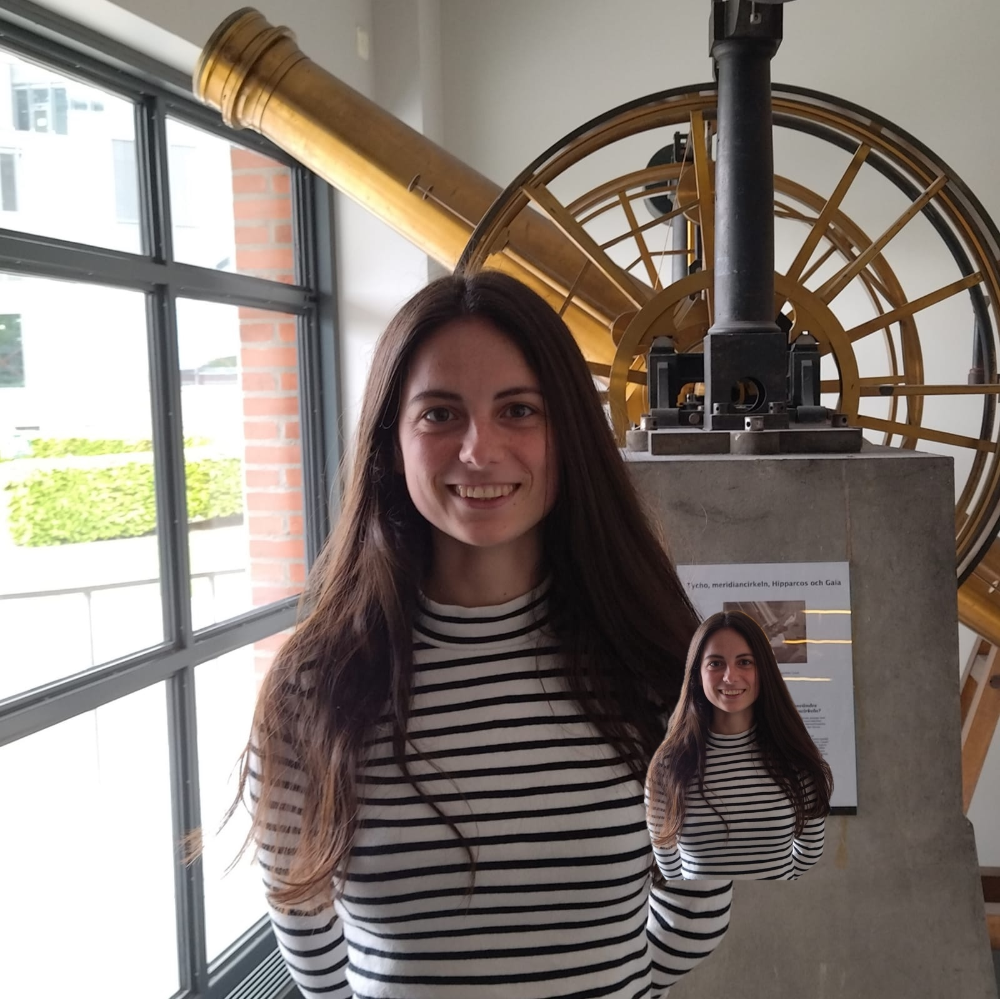

Kaixo! I am Nerea Gurrutxaga.
I am a PhD researcher at the Max Planck Institute for Solar System Research in Göttingen, Germany. I study how planets form using computer simulations. Currently I am trying to figure out what meteorites tell us about the formation of our solar system. Learn about my research